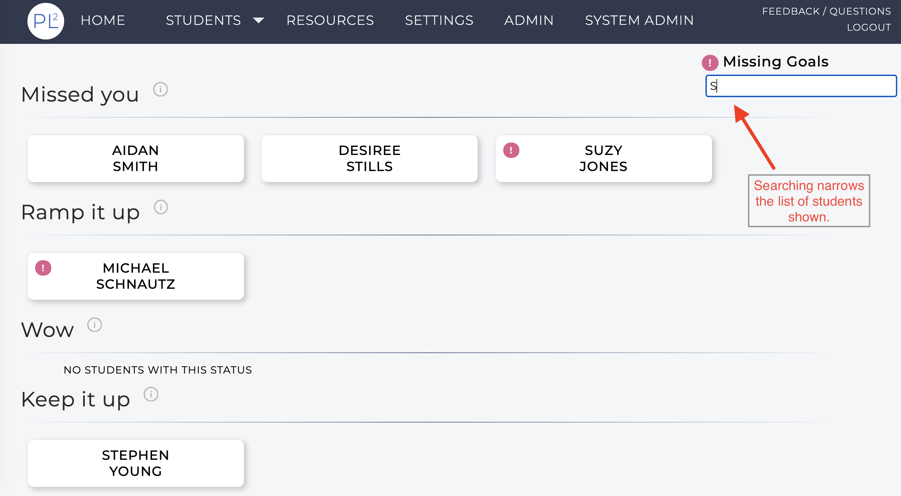
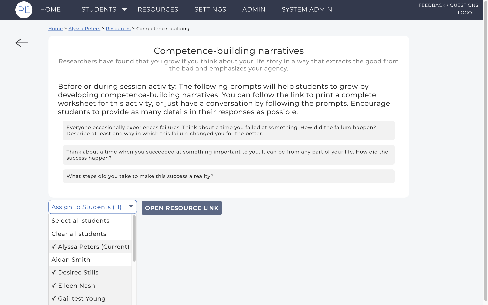
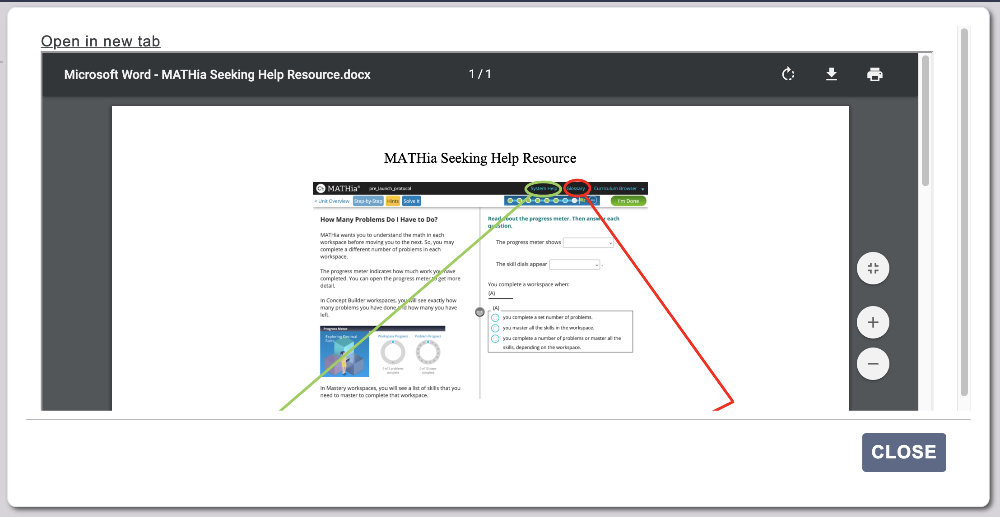
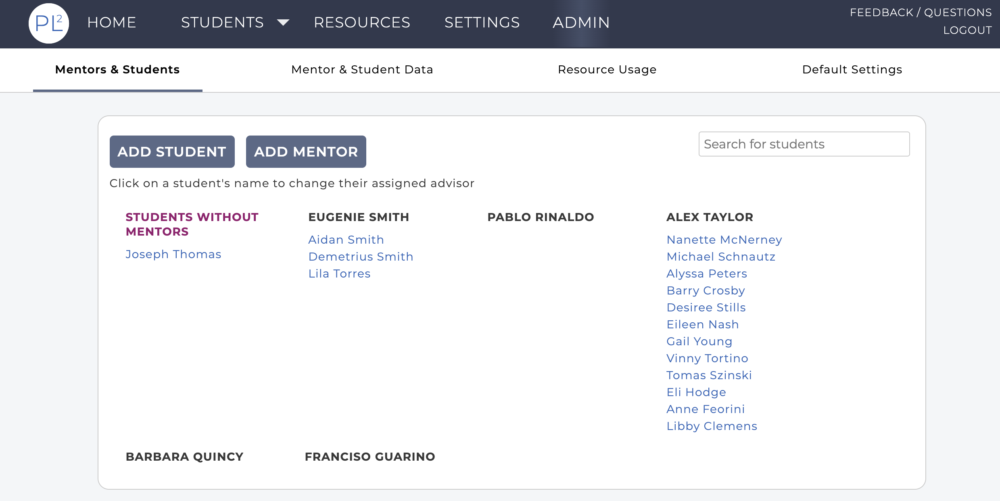
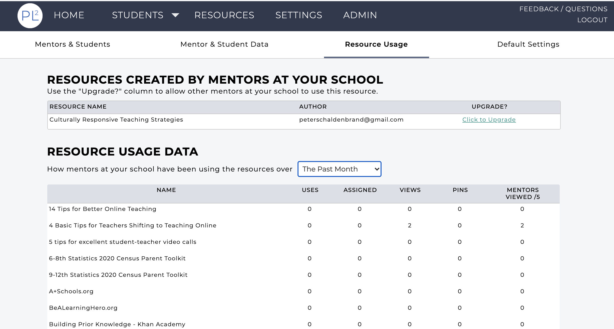

Version 3.0 released September 3, 2021!
PL² version 3.0 has been released! Please take a moment to read
about the latest features that are now available in the app (personalizedlearning2.org).
Mentors
On your home page we have added a search box so that you can filter
the list of students shown. This search allows you to filter by
students' first or last names. If you are an Admin for your school you
will also see the search box on your Admin page.

You can now add files to any reflection that you write for a student.
As with any comments in your reflections, other mentors of the student
will be able to download files attached to a reflection. The 'x' next
to the filename can be used to remove an added file.

On the
Settings
page there is now an information graphic explaining how the student
status is computed. Click on the "Student Category Computation
Explanation" link to view.
The Resource Assistant was introduced with the last release and
provides a means for locating suggested resources after answering
questions about your student. However, sometimes you already know the
specific resource you want to use so we added an Advanced Search for
navigating resources. In addition to filtering by pinned resources and
the intended users (students or mentors), you can sort the resources
by name, usage or chronological order and you can search by resource
name.


You can now assign a resource to all of your students at once. The
"Assign to Students" drop-down list on a Resource includes an option
to Select all students. Similarly you can use this to remove the
resource assignment from all students.

In the above image you can see an example of the "breadcrumbs" that we
have added to several pages in the app (here they are: Home > Alyssa
Peters > Resources > Competence-building...). Breadcrumbs show the
trail of pages you clicked to get to the current page and allow for
easy navigation back to an earlier page. For instance, in this example
you can go directly back to the student (Alyssa) page from this
resource or back to the list of Resources that included the resource
page you are on.
If a resource has a file attached you can now preview that file in the
app without having to download it. For example, this is the preview
image for the 'MATHia Seeking Help' resource.

Admins
We have redesigned the Admin page to have four tabs: Mentors &
Students, Mentor & Student Data, Resource Usage and Default Settings.
The Mentors & Students tab displays a list of students, by mentor,
where each student name is a link that you can use to change the
student's profile (e.g., assign them to a different mentor or change
which EdTech the student is using). You can also use this page to
remove the student from your roster. On the Mentor & Student Data tab,
you can view usage data for the mentors and students, both in a table
form or graphically. Clicking on a student's name in the Student Data
table will take you to that student's dashboard. The Resource Usage
tab gives information for how the PL² resources are being used by
your mentors. Also on this tab is a list of resources that mentors at
your institution have created. You can choose to upgrade these
resources, making them available to all mentors at your school.


With this release we have added support for a new EdTech option:
ALEKS. If you are
already using ALEKS with your students or are interested in learning
more about how we are using ALEKS data in the app, please
contact us.
If you have any questions or feedback for the team we can be reached
using the QUESTIONS? link in the navigation bar of the app or via
email at
pl2-app-help@lists.andrew.cmu.edu. We would love to hear from you!